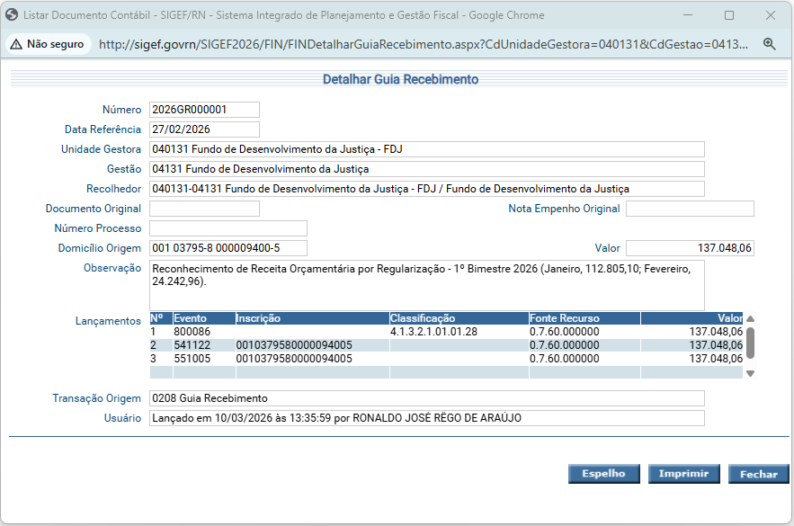
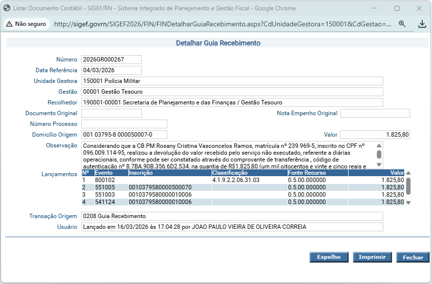
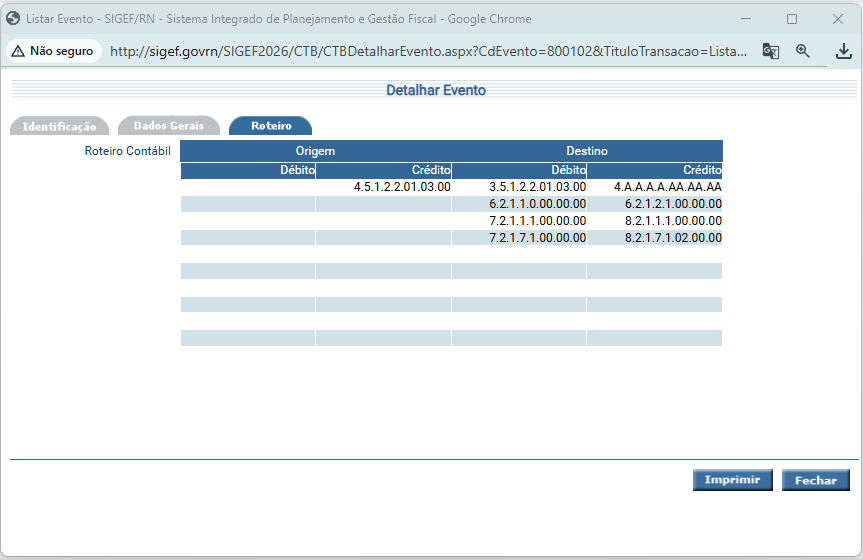
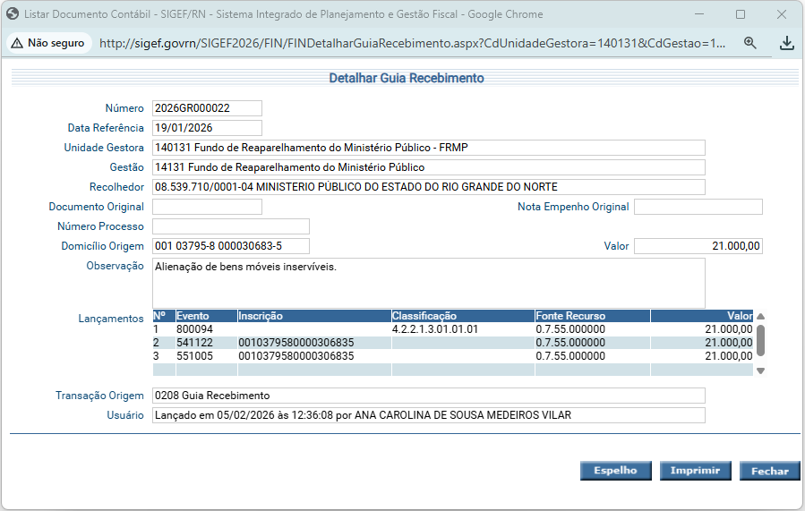
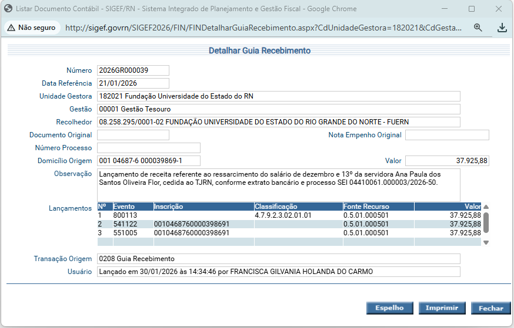
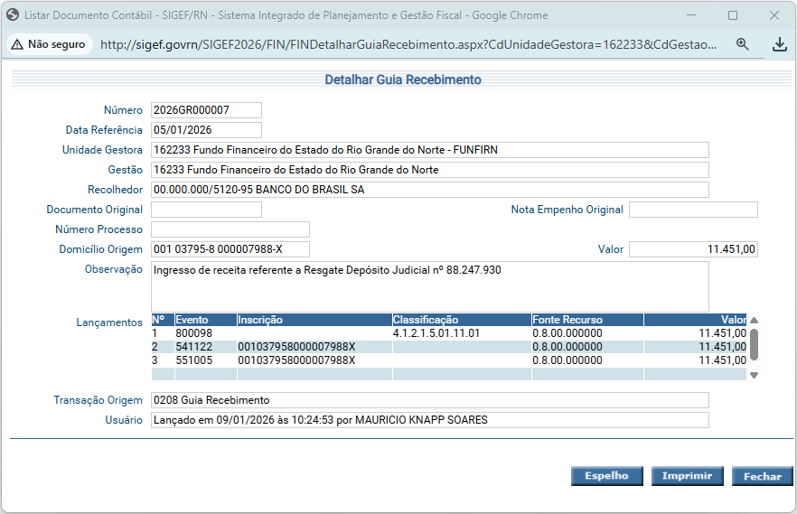
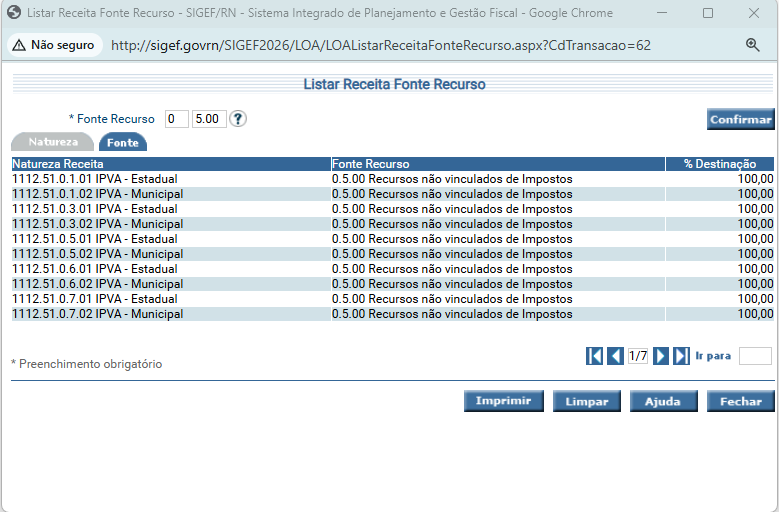
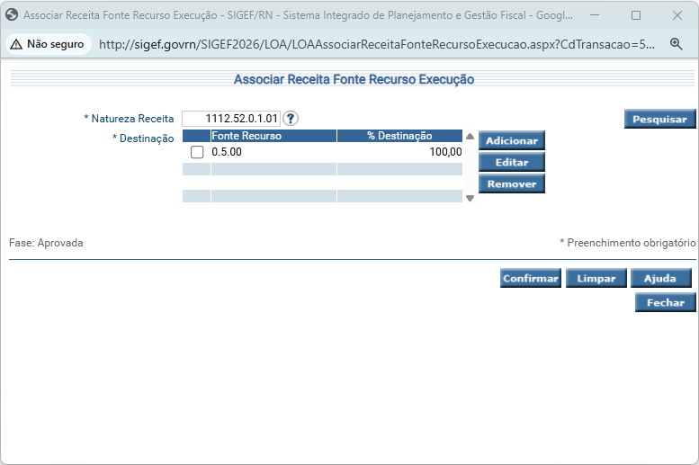

Receitas Orçamentárias
- Receitas correntes
- Evento: 800086 - Fonte UG

- Evento: 800102 - Fonte Tesouro
- Aplica-se por exemplo nos casos de devolução de valores que foram repassados pela CAF em fonte tesouro.


Receitas de Capital
- Evento:800094

Receitas Intra-orçamentárias podem ser lançadas por:
- Guia de Recebimento (GR)
- Evento: 800113

- Evento: 800098 - quando há um registro prévio de crédito a receber

- De forma automática por meio das funcionalidades:
- Manter Créditos a Receber Automáticos
- Associar Despesa Receita Executada IPERN (Apenas IPERN)
Receitas Extraorçamentárias
- Receita extraorçamentária fonte 9.869, casos:
- Recursos cujo ingresso não seja identificado pelo órgão
- Evento: 800000 - Registro de Rendas a Classificar
- Recursos que pertençam a terceiros será no evento 800820 (Valores em Trânsito – Depósito Para Quem de Direito), pois será devolvido em breve usando o evento 700820 (PP extra com controle credor).
- Evento: 800820 - Valores em Trânsito - Depósito Para Quem de Direito F. 9.869
- Funcionalidade: Guia Recebimento
- Evento: 700820 - Pagamento Valores em Trânsito - Depósito Para Quem de Direito
- Funcionalidade: PP Extra Orçam. COM Controle Credor
Estornar Nota Empenho Paga
- Estorno do empenho pago: Se a devolução dos valores for referente a uma despesa do ano corrente, ou seja, se o empenho for do mesmo ano da devolução, o recomendado é fazer estorno do empenho pago:
- Fazer GR no evento 800001
- Se a devolução for para conta única, vai precisar fazer a GR na conta arrecadação da UG e a centralização manual, por meio dos eventos 580201/580202.
- Estornar nota empenho pago
Associar fonte a natureza de receita:
- Cada Natureza de Receita será associada a apenas uma fonte de Recurso. Antes de associar uma natureza de receita é importante verificar a legalidade dessa ação conforme as normas de contabilidade presentes no MCASP e no ementário da receita.
- Para facilitar no momento do atendimento, recomenta-se utilizar a funcionalidade LISTAR RECEITA FONTE RECURSO para verificar as naturezas de receita que já estão associadas a fonte de recurso desejada, na maioria dos casos já existe uma natureza que vai atender ao caso concreto da UG. Se após está consulta for verificado que não existe uma natureza de receita associada a fonte desejada, utiliza-se a funcionalidade ASSOCIAR RECEITA FONTE EXECUÇÃO:


- OBS: Toda NR criada já pode ser associada a uma fonte de recurso.
Nota Lançamento - Aplicação/Resgate/Rendimento
- A funcionalidade apresenta apenas os eventos evolvidos nestas ações. Dessa forma, a conta contábil utilizada para o domicílio bancário é quem vai determinar o evento de aplicação, resgate ou rendimento. Ou seja, primeiro é necessário consultar o detalhar conta da UG e verificar qual a conta contábil adequada, após isso, buscar em Listar evento, para procurar o evento e avaliar se o roteiro se enquadra no que se deseja registrar, conforme a conta contábil.
- Obs: Na funcionalidade NOTA LANÇAMENTO vai gerar um ERRO, pois os eventos de APLICAÇÃO/RESGATE/RENDIMENTO estão associados para serem usados com NOTA LANÇAMENTO APLICAÇÃO/ RESGATE/ RENDIMENTO
Pagina Incial